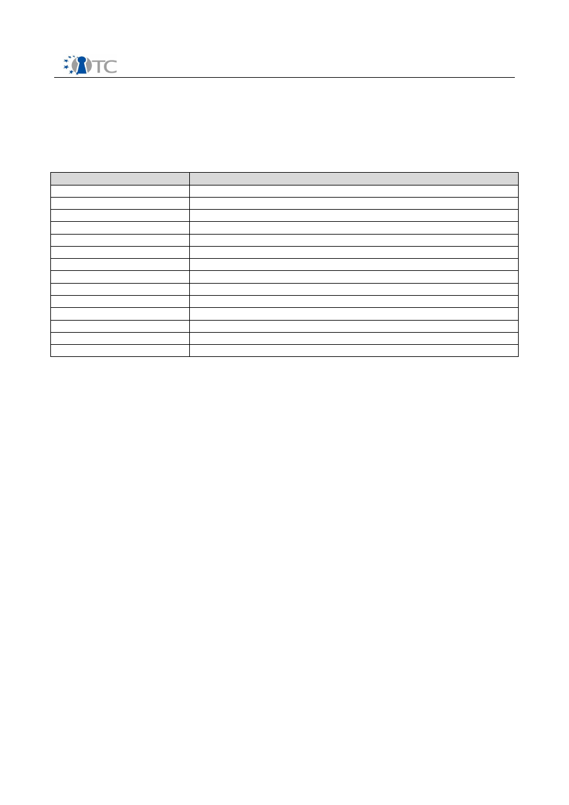

D01.2 Technical Leader report on Open Trusted
Computing Strategy
(M18) April 2007
Project number
IST-027635
Project acronym
Open_TC
Project title
Open Trusted Computing
Deliverable Type
Other
Reference number
IST-027635 /D01.2/V1.0 Final
Title
D01.2 Technical Leader report on Open
Trusted Computing Strategy
WPs contributing
WP01
Due date
April 2007 (M18)
Actual submission date
June 14, 2007
Responsible Organisation
HPLB
Authors
Dirk Kuhlmann
Abstract
This document gives an overview of the
development and status quo of OpenTC,
discusses recent technical and non-technical
developments that influence the future
direction of the project, and outlines the
project strategy for the remaining work
period.
Keywords
OpenTC, Virtualization, Trusted Computing,
Strategy
Dissemination level
Public
Revision
V1.0 Final
Instrument
IP
Start date of the
project
1
st
November 2005
Thematic Priority
IST
Duration
42 months
D01.2 Technical Leader report on Open Trusted Computing Strategy
V1.0
If you need further information, please visit our website
www.opentc.net
or contact
the coordinator:
Technikon Forschungs-und Planungsgesellschaft mbH
Richard-Wagner-Strasse 7, 9500 Villach, AUSTRIA
Tel.+43 4242 23355 –0
Fax. +43 4242 23355 –77
Email
coordination@opentc.net
The information in this document is provided “as is”, and no guarantee
or warranty is given that the information is fit for any particular purpose.
The user thereof uses the information at its sole risk and liability.
Open_TC D01.2
2/32

D01.2 Technical Leader report on Open Trusted Computing Strategy
V1.0
Table of Contents
1 Introduction and Executive Summary..........................................................................4
2 Revisiting OpenTC Objectives and Goals..................................................................... 6
2.1 First Objective: Operating System Security............................................................ 6
2.2 Second Objective: Management Infrastructure and Protocols................................ 8
2.3 Third objective: Application Prototypes...................................................................8
2.4 Lessons Learned..................................................................................................... 9
2.4.1 Trusted Computing Hardware............................................................................ 9
2.4.2 Basic Management Interface.............................................................................. 9
2.4.3 Manageability .................................................................................................. 10
2.4.4 Tests and Validation......................................................................................... 10
3 Strategic Factors....................................................................................................... 12
3.1 The State of Trusted Computing........................................................................... 13
3.2 Trust, Transparency and Openness...................................................................... 14
3.3 TCB Reduction and Decomposition....................................................................... 15
3.4 User Control and Technical Restrictions................................................................16
3.5 Public Acceptance................................................................................................. 18
3.6 Intellectual Property and Licensing....................................................................... 19
4 Interoperability ......................................................................................................... 21
4.1 Platform and OS Virtualization.............................................................................. 22
4.1.1 Approaches to Virtualization............................................................................ 22
4.1.2 Virtualization for Hybrid Server Environments................................................. 23
4.1.3 Client Side Virtualization.................................................................................. 23
4.1.4 Virtualization and Trusted Computing Base Size.............................................. 24
4.2 Trusted Computing Technology............................................................................ 25
4.2.1 Server Side....................................................................................................... 25
4.2.2 Client Side........................................................................................................ 25
4.2.3 Access to Security Critical OS Components and Interfaces.............................. 26
4.3 Outlook................................................................................................................. 27
5 Strategic Goals for 2007............................................................................................ 29
6 References................................................................................................................. 30
6.1 List of Citations..................................................................................................... 30
6.2 Additional References........................................................................................... 31
7 List of Abbreviations.................................................................................................. 32
Open_TC D01.2
3/32

D01.2 Technical Leader report on Open Trusted Computing Strategy
V1.0
1 Introduction and Executive Summary
This document describes the strategy of OpenTC. It is based on the experiences of the
first 18 months of activities and factors in a number of technical and non technical
developments during this period that are deemed of relevance for the future structure
of the project.
We have revisit the main objectives and goals that are laid down in the Technical
Annex of the project proposal, outline the steps we took to achieve these objectives
and describe the progress we made so far. In summary:
●
The project is well on track, all deliverables have been timely produced and as
set out by the work plan. In this process, OpenTC has gathered in-depth
practical experience with the underlying technologies. This has led to insights
into actual hardware throughput, hypercall interfaces, management
requirements for Trusted Computing and test and validation procedures that
will influence the future scope and focus of OpenTC.
●
While the project is well on track with regard to its original goals, there are a
number of external factors to be taken into account for defining its future
direction. We will discuss such factors in the context of OpenTC's working
hypotheses and assumptions. In summary, software solutions using TC are
lagging behind an ever growing base of platforms that is equipped with TC
technology. Reconciling the principles of open software with those of assured
security properties poses a number of interesting challenges, which suggests to
focus on the attribute of 'code transparency' as the central criterion.
●
Pure security considerations favour the reduction of the trusted computing base
– the direction pursued by OpenTC. Practical experience shows that this has to
be balanced against other factors such as time-to-market, as exemplified by the
recent inclusion of the Linux Kernel-based Virtual Machine (kvm) into the main
kernel tree. From a conceptual perspective, this solution might be weaker than
OpenTC, but its practical availability may conquer application areas addressed
by our project.
●
Concerns about the compatibility of future GPL versions with Trusted Computing
have been reduced thanks to a distinction between “user products” and
commercial products that was included in the latest draft of the GNU public
license v3. With regard to improve both, public and international acceptance of
Open Trusted Computing, we suggest to extend our efforts of multinational
synchronization activities and work on a common definition of Open Trusted
Platforms in form of a certified Protection Profile.
OpenTC explores combinations of
Trusted Computing mechanisms
(as defined by the
Trusted Computing Group, TCG) with
virtualization layers
based on Open Source
implementations. A core activity of this project is to investigate options on merging
these two technologies into open trusted virtualization technology that can be used in
conjunction with
non-proprietary
guest operating systems such as Linux.
Strictly speaking, questions of interoperability with support of proprietary guest OSs
are therefore outside of the project's scope. However, recent developments have
shown that it is possible to employ the XEN and L4 virtualization layers used by this
project in conjunction with Microsoft operating. Furthermore, Microsoft has launched
initiatives to improve interoperability in mixed source environments and have set up
Open_TC D01.2
4/32

D01.2 Technical Leader report on Open Trusted Computing Strategy
V1.0
co-perations with XenSource and OpenTC partner SuSE/Novell as part of this strategy.
We have therefore included a section on interoperability. In summary:
●
There are currently
no
instances of mandatory use of TC technology, for
example to bind the operating system, application software or data to specific
hardware platforms.
●
Activities outside the project have demonstrated that both hypervisors used by
OpenTC interoperate with instances of MS operating system, provided that
hardware supported virtualization is employed.
●
Microsoft has launched major initiatives and strategic alliances to improve the
interoperability of their enterprise server OS with hypervisors based on open
source and to support requirements in mixed closed and open source
environments.
●
These initiatives do not extend to operating systems running on client desktops
so far. In this field, difficulties arise from new types of end user licenses that
include specific provisions on virtualization, in particular for OEM versions. The
actual applicability of these terms is unclear due to a lack of harmonization in
European legislation.
●
The advent of virtualization presents an unique opportunity for evolutionary
strategies of migrating between proprietary and non-proprietary execution
environments which can be used in parallel to play to their respective strengths.
This observation applies to both server and client scenarios.
●
A harmonized European view on the legal status would further the prospects of
trusted virtualization, in particular on client systems. Users should also be in a
position to freely choose between different types of hypervisors (including
proprietary and non proprietary ones) with regard to their capabilities, level of
validation etc.
Like any strategy, the OpenTC strategy might be subject to future updates and
changes to reflect and react to ongoing developments in technology and markets. We
therefore consider this paper a working document that is likely to be be amended over
time. However, we are confident that this version already describes most of the
context factors that are relevant for OpenTC for its remaining duration.
Open_TC D01.2
5/32

D01.2 Technical Leader report on Open Trusted Computing Strategy
V1.0
2 Revisiting OpenTC Objectives and Goals
This section discusses the progress of OpenTC with regard to the objectives set out in
the project proposal. We explain how we addressed specific objectives and highlight
problem areas where appropriate. The discussion is structured along the three major
specific objectives listed in the Technical annex, namely, operating system security,
management infrastructure and protocols, and application prototypes. In the last
section 'Lessons Learned', we highlight a number of intermediate findings that had or
will have an impact on work in OpenTC.
2.1 First Objective: Operating System Security
In summary, OpenTC has set out to develop an OS architecture with enhanced
security and trust properties. These properties are based on isolation mechanisms
provided by low level virtualization layers and interfaces to Trusted Computing
hardware. The approach allows to leverage enhanced trust and security properties of
the base platform to higher layers such as hosted operating systems and applications.
The architecture exploits novel hardware features offered by Trusted Platform Modules
(TPMs) and the security enhanced CPUs. It comprises of three major building blocks
that are to be developed in the context of OpenTC. Specifically, these are
●
universal virtualization layers for component isolation,
●
a Trusted Software Stack (TSS) for Linux allowing to interface the TPM
hardware, and
●
Trusted Computing and TPM management software
Over the last 18 month, OpenTC has developed a definition of baseline trust and
security properties that can realistically be provided by means of virtualization (as
opposed to properties that should be provided at higher levels in the software stack,
e.g. by hosted OS instances or application). Based on this distinction, the project has
also defined a set of architectural principles that guide design and development
efforts.
The first observation was that while Trusted Computing (TC) mechanisms allow to
determine and attest to the identity and integrity of software components, these
mechanisms typically can not improve the reliability and security properties of such
components. (A notable exception are components that rely on secure key
management and immutable cryptographic primitives, both of which are provided by
Trusted Computing Modules). In simple terms: TC mechanisms can't make unreliable
or subverted software better or more robust. What TC mechanisms can, however, is to
limit the maximum damage that can result from the execution of unreliable software.
Security critical system elements can have more confidence in the assumption that
they are properly shielded from software elements outside their own trust domain.
As a second observation, the mechanisms employed by the OpenTC architecture are
oblivious to detailed application logic. In terms of abstraction, virtualization layers
have a very coarse view of the system, which is confined to resource management
(scheduling, sharing, and mutual isolation), and policies that can (and should) be
enforced at this level are quite basic. Only runtime capabilities of trust domains (aka
'compartments') that are visible at the level of compartment configuration information
or calls through the hypervisor interface can be policed. This relies on a relatively
Open_TC D01.2
6/32

D01.2 Technical Leader report on Open Trusted Computing Strategy
V1.0
small number of fundamental properties
1
. OpenTC's activities are geared towards an
architecture that comprises a substantial set of mechanisms implementing these
properties.
A third observation concerns the size and design of the Trusted Computing Base
(TCB). For reasons that should be obvious, a TCB that requires constant updates or
patching (with a subsequent change of integrity metrics) would pretty much defeat
the technical approach of Trusted Computing as defined by the TCG. Its core idea
hinges on the assumption that it will be possible to arrive at a mature, well-validated
set of components that constitute a TCB of limited complexity and high code stability.
The interdependence between size, complexity, ease of validation, maturity and code
stability is not a simple one, but as a rule of thumb, large size and high complexity of
code increase the risk of bugs, make evaluation more difficult and patching more
likely. OpenTC's architectural approach strives to minimize the dependency of security
mechanisms and to make them independent from highly privileged host operating
systems that run as management environment (such as a dom0 Linux instance under
XEN).
The development of a Trusted Software Stack for Linux has progressed with
remarkable speed; OpenTC partner Infineon has invested a huge amount of effort to
make this component available to the other partners at the earliest stage possible. In
the context of OpenTC's quality assurance activities, interfaces of the software stack
were subjected to extensive vulnerability testing. The project expects to be in a
position to replace the TrouSerS stack and TPM emulator (used as intermediate
solution in last year's demonstrator) with Infineon's latest implementation
(TSSv070316) during the second half of 2007. A corresponding test and integration
plan is under development.
Concerning Trusted Computing and TPM management software, OpenTC has designed
and prototyped a number of components to facilitate a trusted boot sequence and the
exchange of trust metrics between clients and servers. These components are
currently extended and implemented as core platform services that are accessed
through the Basic Management Interface (BMI). With specific regard to managing the
TPM hardware on end systems, existing tools that are openly available under GPL
(libtpm, TrouSerS) but were developed by third parties outside the context of OpenTC
have so far proven to cover all our needs. Unless a large number of additional
requirements or considerations of quality assurance suggest otherwise, the most
reasonable and economic approach would be to take this existing code base as a
starting point rather than to design and implement the TPM management functions
from scratch.
1 To name some important characteristics: the system should inhibit the interception of data
exchanged between a compartment and the console, prevent interactions with unauthorized
local or remote peers through adequate configuration of virtual network interfaces
appropriate packet forwarding rules, it should be capable to attest to whether message
exchange with authorized peers will be encrypted and whether or not cryptographically
protected persistent storage bound to the compartment is used, whether the compartment
itself has been started from an encrypted image etc.
Open_TC D01.2
7/32

D01.2 Technical Leader report on Open Trusted Computing Strategy
V1.0
2.2 Second Objective: Management Infrastructure and Protocols
This objective concerns components for configuration, network and policy
management and for monitoring and managing the trust and security state of Trusted
Platforms. In accordance with the OpenTC work plan described in the updated
Technical Annex, the majority of the work on distributed platform management will
occur in year 3 of the project. Nevertheless, OpenTC already has a number of ongoing
activities in this area.
The 2006 demonstrator was a first feasibility study that yielded a set of requirements
for an infrastructure capable of managing Trusted Platforms. We have gathered a lot
of practical experience with the complex processes and mechanisms necessary to
initialize a new Trusted Computing platform, to equip it with the necessary credentials
and to maintain up-to-date registration data. Specifically, work on the demonstrator
has resulted in a partial, prototypic implementation of back-end infrastructure
components such as PKI, repositories, and mechanisms to support remote attestation.
At the conceptual and theoretical level, requirements for managed infrastructures
were analysed in the context of deliverables D02.1 and D02.2 (OpenTC Requirements
and Specification Report) and the scenario/use case analysis for managed data
centres. Current efforts focus on network management as a prerequisite to build
distributed 'virtual trusted domains' consisting of multiple, interacting compartments
with similar trust properties on different physical nodes.
As a first step towards configuration management, we are in the final stages of
integrating the OpenTC development environment and its software components with
the professional distribution building process of SuSE. Once finished, the system will
allow fully automated builds of complete OpenTC distributions with customer defined
packages from scratch. This is an intermediate step of some importance, as the
process of building distributions bears many similarities with image and package
management in corporate infrastructures.
It should be emphasized, though, that the demands on a system to manage a
corporate infrastructure on a day-to-day basis are likely go beyond what can be
achieved with an automated build system, even with one as sophisticated as that of
OpenSuSE. On a more general note, the question of how to reconcile the need for
dynamic patch management with the somewhat static approach of Trusted Computing
based on integrity metrics is a matter of ongoing research.
2.3 Third objective: Application Prototypes
Prototypes for supporting Trusted Computing include the necessary Certificate
Authority and Public Key Infrastructure components mentioned in the previous
chapter. A prototypic integration of Trusted Computing with existing PKI tools has
already been achieved as part of the 2006 demonstrator which provided back-end
components for issuing certificates to Trusted Platforms. The TSS stack has been
interfaced with JAVA wrapper functions. Not only are these wrappers useful for JAVA-
based end user applications, they also allow us to interface Trusted Computing
functionality with JAVA agents deployed by complex management software for
distributed systems.
The first iteration of application prototype for multi-factor authentication did not
require specialized security services from a Trusted Platform and could therefore be
integrated in the 2006 demonstrator. Other application scenarios have influenced the
Open_TC D01.2
8/32

D01.2 Technical Leader report on Open Trusted Computing Strategy
V1.0
selection and design of OpenTC security components such as a time-stamping service
and a trusted graphic subsystem. These services as well as their API is under active
development in a coordinated effort between work packages. First implementations of
prototypes for TC based secure messaging, interoperable digital rights management
for multimedia and encrypted file services are expected to be ready for the second
OpenTC review end of 2007.
The proof-of-concept WYSIWYS (What You Sign Is What you See) application for
trusted digital signing and verification relies on the availability of a trusted service for
graphic console output. The components for the graphic system quite probably
constitute the greatest challenge of all security services to be implemented by
OpenTC, and we do not expect their availability for both hypervisors before the end of
2007. Practical work on the WYSIWYS will therefore be started in 2008, which is in line
with the OpenTC the work plan.
2.4 Lessons Learned
Our work on prototyping components for the OpenTC framework has yielded a number
of results which have to be taken into account for future implementations and are
likely to impact on the technical direction of the project.
2.4.1 Trusted Computing Hardware
The limited throughput of Trusted Computing Modules (TPMs) was a sobering
experience. Under load, the speed for many of its operations can be measured in
seconds rather than milliseconds. This confirms our working hypothesis that it might
be preferable to limit the use of hardware TPMs to early phases of system boot-up and
compartment initialization. Any use of the TPM beyond this point will have to be
weighted against the performance penalties imposed. These considerations could
inhibit TPM usage for many services optimized for speedy response.
We also expect a perceptible difference in end user experience if TPM based
cryptographic functions are used in implementations for session protocols such as
SSL/TLS or SSH. Although the integration of hardware TPM functionality with these
protocols (SSH, TLS) is technically feasible, the potential impact on performance raises
some doubts on if such an integration is in fact desirable. A possible remedy would be,
to use 'virtualized' TPMs (software emulators) instead. These virtual TPMs could inherit
their trustworthiness from the hardware TPM, but they would require a bullet-proof, if
not even a provably secure, implementation of the Trusted Platform hosting them. For
the duration of the project, OpenTC is unlikely to arrive at an architecture that can put
'virtual TPMs' on equal footing with hardware TPMs with regard to tamper resistance
and trustworthiness.
2.4.2 Basic Management Interface
OpenTC aims at providing a Basic Management Interface (BMI) common to XEN and L4
at the lowest level possible. The most desirable option would be a common hypercall
interface for XEN and L4, since this would allow to use identical versions of
paravirtualized kernels with both hypervisors. However, our investigations indicate
that a common hypercall interface is beyond what can be achieved during the
duration of the project. Major obstacles are imposed by fundamental differences in the
design of XEN and L4. A possible line of investigation are mechanisms that would allow
Open_TC D01.2
9/32

D01.2 Technical Leader report on Open Trusted Computing Strategy
V1.0
to abstract from the underlying differences, for example by means of an interface
layer, but this approach is likely to come with considerable performance penalties.
This, however, is not an option, as such penalties would eat away the main
competitive advantage paravirtualization has over full, hardware based virtualization –
namely, advantages in performance. The design of the BMI therefore focuses on
unifying common management tasks and interactions with basic TC services.
2.4.3 Manageability
Work on the OpenTC demonstrator has highlighted manageability as one of the core
issues for Trusted Computing. Even in this very constrained scenario, we had to deal
with challenges arising from differences in platform configuration. For example,
different firmware versions on otherwise identical computer models will invariably
produce differences in the integrity metrics produced during boot-up. As a
consequence, multiple alternative 'known good' metrics have to be registered and
maintained for the same platform type. A related set of challenges arises in situations
where it is necessary to patch the Trusted Computing Base.
Due to our focus on corporate and institutional application scenarios, OpenTC can start
from a number of simplified assumptions. In organizations, the variety of computer
models tends to be constrained due to corporate procurement. We can assume pre-
existing relationships between the organization, administrators and end users, a well-
defined and controlled process to initialize new platforms, corporate ownership and
backup procedures for the TPM master secrets, and general adherence to
organizational policies such as not to open and inspect devices. Even under these
conditions, additional IT management overhead will be hard to avoid.
For the market of end consumer PCs, most of the aforementioned simplified
assumptions are unlikely to not hold. Our present experiences suggest that TC based
mechanisms for the corporate environment or embedded devices will ultimately be
feasible. On the other hand, the introduction of similar mechanisms on end consumer
PCs will have to overcome formidable practical hurdles.
2.4.4 Tests and Validation
OpenTC started out from existing hypervisors (XEN and L4) that provide core features
for a security architecture based on trusted virtualization. These two are extended
with specific security functionality during the project. The hypervisors were chosen
with regard to their set of capabilities, their chances to succeed in the market and the
size of their developer communities. However, neither of the two hypervisors was
originally designed as security components, which poses some challenges for
attempting to validate their suitability for this purpose, in particular regarding absence
of design documentation compatible to a security validation process.
Frequent changes in the code bases is still common, making it a moving target for
reverse specification efforts. It is unlikely that a full documentation for security
validation can be produced during the project. We have therefore focussed our efforts
on quality aspects of the hypervisor source code. We have identified a number of
critical hypercalls whose code base is relatively stable. The corresponding call
hierarchies will be subjected to detailed analysis and tests. This effort should result in
test 'templates' that demonstrate in sufficient detail how an in-depth analysis is
Open_TC D01.2
10/32

D01.2 Technical Leader report on Open Trusted Computing Strategy
V1.0
prepared and performed. These templates can serve as guidance for developer
communities on how to tackle non-validated parts of the implementation.
Open_TC D01.2
11/32

D01.2 Technical Leader report on Open Trusted Computing Strategy
V1.0
3 Strategic Factors
This section describes several recent developments that could be of importance for
determining OpenTC's focus and direction for the remaining time of the project. They
will be discussed in the context of the central working assumptions of OpenTC,
namely:
1.
TC as base technology:
Due to increasing complexity of technology, it will
become harder to assume or attribute personal responsibility of ends user for
the proper operation of his IT components. This issue can be addressed by
introducing IT components that monitor and ensure base characteristics of the
overall systems. This approach will also require intermediaries who vouch for
properties of system components and define configurations suitable for
particular types of electronic transactions. Trusted Computing provides the base
technology and is currently without alternative. In the long run, TC mechanisms
are likely to become a necessary prerequisite, in particular in distributed
environments.
2.
Transparency and Openness:
Trusted system components tend to require
high system privileges which make them preferred targets for potential abuse.
The source code for these components should be publicly accessible to allow for
inspection. This also puts users in a position to check whether a compiled binary
actually corresponds to source code. In order to enable participation of external
communities, OpenTC has opted for using the Open Source distribution model.
3.
TCB Decomposition:
Large, monolithic operating systems will be increasingly
hard to maintain. Validating their security properties gets more and more
difficult if they grow in size, which renders them unsuitable as part of the
Trusted Computing Base (TCB). The design of Trusted Computing Platforms
should strive to minimize size and complexity of the TCB. This can be achieved
through modular design of security critical functions into a small number of
well-defined services. Such services can be validated independently and can
perform their specific tasks without unrestricted access to central system
resources.
4.
User Control and Technical Restrictions:
The paradigmatic demand for 'full
user control at all times' is inappropriate for distributed electronic transactions,
in particular if such transactions spawn multiple organizational or legal domains.
Options of full control may be limited by multilateral agreements with
transaction partners to maintain operational characteristics of the execution
environment during the lifetime of a transaction. For such cases, a Trusted
Platform should provide mechanisms to provably constrain the user's freedom
to change the software configuration during this interval. Open Trusted
Platforms should require the explicit consent of a user before spawning a
constrained environment. They allow also allow to run unconstrained and
constrained execution environments side by side.
5.
Public Acceptance:
TC technology can not be introduced without buy-in from
the end users. The design of Trusted Platforms therefore has to factor in aspects
of commercial and social acceptability from the outset. The acceptability of the
architecture would be furthered by being applicable across different platform
types (workstations, servers, embedded) and by being agnostic with regard to
hosted execution environments (proprietary and non-proprietary operating
Open_TC D01.2
12/32

D01.2 Technical Leader report on Open Trusted Computing Strategy
V1.0
systems). It should also be acceptable to entities with potentially conflicting
interests, such as consumers and providers of goods and services or different
geopolitical or economic blocks.
These working assumptions serve as a structure for the following discussion. Issues
concerning Intellectual Properties will be addressed in a separate sub-section at the
end of this chapter. The question of potential interoperability between non-proprietary
and proprietary approaches to (trusted) virtualization required a more detailed
analysis that can be found in the following chapter.
3.1 The State of Trusted Computing
Trusted Computing has met a fair amount of criticism from the general public and
parts of the scientific community and has been improved and extended as a result of
the debate. The bulk of the critical arguments did not concern the technology itself,
though, but potentially harmful economic and societal impacts. Several years down
the line, none of the threat scenarios has become reality.
Despite a relatively slow uptake of the technology, Trusted Computing is still an area
of active research and standardization. The continued efforts of the Trusted
Computing Group (TCG) indicate that its central working hypothesis is still considered
to be true. It maintains that trustworthy remote attestation of platform characteristics
will become a necessity in the not too distant future to maintain a baseline of
expectable behaviour in distributed environments. The continued development of TC
can also be attributed to the fact that, despite extensive criticism, no technical
alternative to this technology has been put forward by the scientific community since
its inception in 1999.
In the meantime, TC hardware has become more widely deployed. Trusted Platform
Modules (TPMs) are an integral part of many state of the art desktop and laptop
machines. In particular, this applies to products targeted at corporate customers.
However, while the technology is embedded in an ever increasing number of
platforms, the process of putting TC to practical use has been relatively slow. As of
April 2007, the predominant use of Trusted Computing Modules (TPMs) improved
access control (through hardware-rooted authentication) and the support of hardware-
rooted file system encryption.
Current applications only use a small subset of the functionality provided by TC
hardware. Solutions like MS BitLocker allow to link the accessibility of data to the
platform state, but this is achieved without relying on any type of certificate and
without taking platform integrity measurements of early boot stages into account. To
sum up, Trusted Computing is very much used in 'standalone' mode today, while the
exploitation of its functionality for remote attestation is still in its infancy.
The complexity of technical, organizational and legal prerequisites for a trusted
computing infrastructure may have surprised even for some of the inventors of this
technology. While there can be little doubt about the principal need for attestation in
distributed environments as well as about the lack of technical alternatives to TC,
there are still a number of open questions that are likely to influence the chances of
this technology to actually take off on a wide scale:
1. So far, TC lacks an ecosystem of support services. As a prominent example, the
Open_TC D01.2
13/32
D01.2 Technical Leader report on Open Trusted Computing Strategy
V1.0
utilization of TC based remote attestation across organizational boundaries is
based on the availability of authoritative platform certificates from IT
manufacturers. These certificates attest to the existence of an immutable
routine to bootstrap trusted configuration measurement as the root of the
attestation process. To our knowledge, not a single certificate has been issued
by any vendor (status April 2007).
The lack of platform certificates has ripple-on effects, as inter-domain TC
identity services and repositories for metrics of 'known-good' configuration rely
on the existence of these certificates.
2. The conspicuous absence of platform certificates might indicate unresolved
liability issues: what is the legal status of an IT manufacture if a platform is
proven not to meet the statements signed in its certificate of getting broken?
On a related note, is an open question whether the disclosure of attestation
information might impose additional liability on the end user. Should this case,
end users would lack incentives to disclose any such information at all.
3. The exchange of attestation information is considered to be a good thing, as it
allows to reliably distinguish 'known–good' from 'known-bad' or unknown
configurations. However, such a disclosure is a double edged sword, as it also
communicates potential vulnerabilities (in particular if an assumed 'known-
good' configuration factually contains exploitable bugs).
4. This leads to the more general question whether the TC approach will prove to
be as suitable instrument requirements in today's highly dynamic struggle
between attackers and defenders. The search for exploits is a highly adaptive
process – once attackers know that a specific vulnerability doesn't exist on a
system, they will turn their attention elsewhere. Similar to law, 'known-good'
configurations may always lag one step behind reality.
5. TC inevitably adds complexity to on the end system, requiring additional
management and increasing the total cost of ownership (see discussion in
section 'Lessons Learned'). In commercial environments, these costs will be
weighted against the expected benefits. The decision on whether or not to
employ TC mechanisms will be highly dependant on the intended application
context.
Regarding the question of whether Trusted Computing can become an ubiquitous
feature of IT systems in future, one may conclude that the number of important
unknowns is still to estimate the chances. As discussed in a later section, the
introduction of TC mechanisms can have a serious impact on the business model of
vendors providing vulnerability analysis and security patching products or services.
OpenTC's work on trusted systems and infrastructures is likely to produce some base
data that allow to tackle the problems listed above. Finding the actual answers to
these questions, however, requires a line of (mainly economic) research that is beyond
the scope of the project.
3.2 Trust, Transparency and Openness
As electronic transactions and distributed systems spawn across organizations,
Open_TC D01.2
14/32

D01.2 Technical Leader report on Open Trusted Computing Strategy
V1.0
companies, nations, economic zones and geopolitical blocks, the matter trusted
systems and infrastructure must be addressed on an international scale. Given the
potentially diverging interest of the parties involved, mutual suspicion between
parties must be assumed as a given. To address this issue, a transparent design and
implementation of Trusted Platforms is of prevalent importance.
The notion of transparency refers specifically to the public accessibility of the source
code constituting the Trusted Computing base. Note that 'transparent' and 'publicly
accessible' does not necessarily imply that the source code made public under an
Open Source license. For example, the transparency requirement would be fulfilled by
a proprietary hypervisor whose source code is made public while the right of copying
modifying, and compiling the code is retained by its creator. OpenTC considers the
distribution of TCB code under open source licenses the favourable option, not at least
to maximize the potential community benefit. However, the question of how to
produce trusted and trustworthy system components goes beyond that of public
accessibility and distribution licenses.
While accessibility of the source code is a necessary prerequisite for validating trust
properties of a system component, it is arguably not a sufficient one. It can be
arbitrarily hard to determine the actual properties of a component from its source
code without additional documentation, so it is desirable to equip source code with a
manifest that specifies what the code can be trusted for (typically, this will describe
the
intended
behaviour of the component and the resources it requires). A trusted
component is supposed not implement stealth features that are not described in its
manifest. Vulgo: it should not act as a trojan horse. Ideally, there should be a
cryptographic binding between the manifest and the source code, which could extend
to the binaries compiled from the code.
It is not clear how demands of flexibility (free modifications of source code) can be
reconciled with the equally important requirement of maintaining attestable and
trusted runtime characteristics as specified in a corresponding manifest. Obviously
that arbitrary changes to the source code (which are perfectly permissible under the
distribution license) have the potential to invalidate the manifest and vice versa. In
both cases, the binding between the manifest and code is destroyed. Furthermore, the
integrity metrics of a user-compiled binary produced from a trusted code base may
differ from a 'canonical' binary that may have been provided by the creator of the
source code (the compiler may insert time-stamping information, or different compiler
options were chosen). The problem on how to create 'canonical' binary
representations from trusted open source code is an area of active investigation.
3.3 TCB Reduction and Decomposition
While the desirability of a Trusted Computing Bases with a small footprint and minimal
complexity is accepted in theory, practical considerations frequently result in violating
this principle. To give an example: although generic tasks and drivers for XEN are
perfectly feasible, the developers took the decision of running a fully fledged instance
of the Linux operation system as a highly privileged domain for hosting the hardware
drivers and the management environment. This is justified by the striking advantages
of using unmodified drivers, scripting engines and development environments. With
hindsight, the decision to leverage existing solutions to a very wide extent was crucial
for the success of the XEN enterprise. Economizing the development process by re-
using existing solutions is of such overriding importance that even the microkernel-
based L4 supports the option of employing Linux drivers wrapped with an intermediate
Open_TC D01.2
15/32

D01.2 Technical Leader report on Open Trusted Computing Strategy
V1.0
software layer. The downside: the result is likely to bulkier and slightly less efficient
than a generic driver. On the upside, the development process may take only a
fraction of the time required to write a generic driver from scratch.
In the interest of rapid prototyping and unifying the development efforts, the 2006
demonstrator design mainly went along with the model of the original XEN
implementation, using Linux as hosting environment for security services. However,
this approach actually increases the size of the Trusted Computing base which
comprises the hypervisor
and
a paravirtualized Linux instance (as opposed to just
Linux in a non-virtualized setup).
Our efforts in 2007 focus on designing and implementing the security services as
generic hypervisor tasks for both XEN and L4. The services under development cover
domain management, networking, encrypted persistent storage, secure path to and
from the console, and the interface to basic TC functionality provided by hardware and
virtual TPMs. This strategy will make us increasingly independent from Linux as a
hosting environment for a management domain. We are also investigating whether it
is possible to confine the role of Linux to that of a driver hosting environment, which
would allow to employ a kernel of drastically reduced functionality.
The OpenTC design reduces the reliance from (trust) properties of a standard OS
acting as a management domain. This is probably the main differentiator compared to
solutions such as NetTop (HP) or XenSE (IBM, NSA) that employ a hardened OS
running as management domain. It also sets the OpenTC architecture apart from
kvm,
the kernel-embedded virtualization environment for Linux. The
Kernel-based Virtual
Machine (kvm)
has become part of the main Linux kernel tree since version 2.6.20 in
February 2007. It becomes widely deployed as a consequence, and OpenTC closely
tracks its evolution. Due to its design as a kernel module, It derives its trust properties
from Linux. From a security perspective, a clear separation between hypervisor and
operating system on the one hand and the decomposition of security critical functions
into dedicated security services on the other hand appears to be the preferred option,
and this line is pursued by OpenTC. It should be noted that the impact of a modular
design on the overall system performance has yet to be determined.
A design emphasizing decomposition could ultimately turn out to safeguard the
maintainability of operating systems. The gargantuan footprint of current standard
operating systems has already spurred predictions that the era of monolithic
deployments of software releases is coming to an end. The potential advantages of
incremental development, test and update of security components was an important
consideration that guided OpenTC's design.
3.4 User Control and Technical Restrictions
One of the most fervently debated points in the debate about Trusted Computing
concerned the level of 'control' the user or owner has over his machine. The most
poignant position is to demand full access to every component and bit at any given
Open_TC D01.2
16/32
D01.2 Technical Leader report on Open Trusted Computing Strategy
V1.0
point as an assumed immutable human right derived from the notion of 'ownership'.
Perpetrators of this line of argument tend to dismiss Trusted Computing on the ground
of principles or suggest mechanisms like TPM 'owner override' that defeat the purpose
of this technology. During the debate on the new GNU Public Licence v3, suggestions
have been made to out rule any combination of code licensed under the GPL with
mechanisms that can limit the user's freedom to access data or technical components
on his or her system. Although this was primarily targeted against DRM enforcement,
the wording of the draft was such that a combination of Trusted Computing technology
could have been affected.
The OpenTC proposal, on the other hand, has argued that temporary constraints of the
freedom or 'right' to execute full technical control are legitimate as long as these
constraints reflect the free decision of the user and explicit mutual consent between
different parties. If a mutual agreement includes specific technical configurations, it is
desirable to have technical mechanisms in place to truthfully report and maintain
them. This exactly is what TC mechanisms are supposed to provide.
OpenTC investigates technical solutions that honour the spirit of free and open
software development (maximizing the freedom of end users) while addressing
aspects of multilateral assurances and security that were typically ignored in the
arguments of organizations such as the EFF and the FSF. Many of their argumentative
fallacies resulted from equating computer users with computer owners (which is not
the case in most professional environments) or from equating platform possession
with platform ownership (which does not hold e.g. for auditing elements that may be
co-located with a corporate infrastructure but are under the control of independent
third parties).
Thanks to the formidable effort of the FSF to consult all of its stakeholders (including
corporate ones) prior to finalize a new license, these considerations have made their
way into the debate on the new GPLv3. Instead of categorically out-ruling a
combination of technology for constrained (restricted) access to resources, the latest
draft distinguishes between “user products” on the one hand and products for
professional environments on the other. The rationale for this distinction reads as
follows:
In our earlier drafts, the requirement to provide encryption keys applied to all acts of
conveying object code, as this requirement was part of the general definition of
Corresponding Source. Section 6 of Draft 3 now limits the applicability of the technical
restrictions provisions to object code conveyed in, with, or specifically for use in a
defined class of “User Products.” In our discussions with companies and governments
that use specialized or enterprise-level computer facilities, we found that sometimes
these organizations actually want their systems not to be under their own control. Rather
than agreeing to this as a concession, or bowing to pressure, they ask for this as a
preference.
2
On a similar line, the GPLv3 debate has moved towards balancing the interests of third
parties and end users (such as service operators) which could justify denial of access
in case of software modifications:
Most technically-restricted User Products are designed to communicate across networks.
2 GPLv3 Third Discussion Draft Rationale, p8f.
http://gplv3.fsf.org/rationale
Open_TC D01.2
17/32
D01.2 Technical Leader report on Open Trusted Computing Strategy
V1.0
It is important for both users and network providers to know when denial of network
access to devices running modified versions becomes a GPL violation. We settled on a
rule that permits denial of access in two cases: “when the modification itself materially
and adversely affects the operation of the network,” and when the modification itself
“violates the rules and protocols for communication across the network.” The second
case is deliberately drawn in general terms. We intend it to serve as a foundation for
development of reasonable enforcement policies that respect recipients’ right to modify
while recognizing the legitimate interests of network providers.
3
Arguably, the current limitation to 'protocols and networks' is an arbitrary one: similar
considerations apply to electronic services at a higher level. The proper operation of
higher level services may equally rely on a specific technical configuration of remote
peers, making it equally legitimate to prevent adverse effects and the violation of
rules and protocols for interaction through restrictive technical mechanisms. On the
other hand, it has to be conceded that the rationale given by the FSF follows the well
established scheme of separating aspects of network provision from those of content
provision. Whether this principal distinction is still appropriate in the age of electronic
services is a subject of future debate.
The current GPL definition constitutes a “user device”, which is currently based on the
US Magnuson-Moss Warranty Act. Under this act,
[p]roducts that are commonly used for personal as well as commercial purposes are
consumer products, even if the person invoking rights is a commercial entity intending
to use the product for commercial purposes. Even a small amount of “normal” personal
use is enough to cause an entire product line to be treated as a consumer product
under Magnuson-Moss.
4
Given this broad definition, a corporately owned PC that provides a compartment for
the employee's private use (under the condition that the isolation mechanisms
shielding the corporate from the private compartments are not tampered with) might
constitute a 'user device'. This would seem unfair, as the permission of using
corporate equipment for private purposes is in the interest of the employee.
Compared with previous versions of the GPLv3 draft, these are relatively minor points
of contention. We consider the current draft a big improvement over its previous
versions, as it has removed some serious inhibitors for combining TC and software
published under a new version of the GPL.
3.5 Public Acceptance
The public debate surrounding Trusted Computing has become much more sober since
OpenTC was conceived. A more accurate reporting in technical and public media has
resulted in improved public knowledge, independent tests have analysed the
conformance of different TPM modules to the TCG standard, interfaces to TPMs are
supported by open and freely available software. All TPM interfacing software we are
aware of provides optional rather than mandatory system components. The notable
exception was Apple's short-lived (and arguably legitimate) attempt to bind the OSX
'Rosetta' kernel to their development boards (the company has currently abandoned
TC support). The sluggish development of 'critical; TPM based software has certainly
contributed the relative calmness of the public discussion.
The TC debate has so far suffered from a high level of speculation on the abusive
potential of TC. Obviously, TPMs could be part of both evil and non-evil uses, and, as
3 Ibid., p14
4 Ibid, p.11
Open_TC D01.2
18/32
D01.2 Technical Leader report on Open Trusted Computing Strategy
V1.0
Amit Singh remarked, “this is a never-ending discussion with a very wide scope, and
we haven't even started discussing the general notions of 'trust' and 'security
5
The
task at hand is to develop a more generally accepted conceptual model for trusted
and secure computing, including protection goals, technical features, architecture,
implementation, and validation processes.
Until now, OpenTC has operated on its own baseline definition of what comprises a
trusted operating system, a trusted framework and a trusted infrastructure. It would
be highly desirable to have a more commonly accepted and public definition for such
platforms. This could very much improve the chances of interoperability between open
and closed Trusted Platforms and enable acceptance on an international scale.
OpenTC therefore explores the option of supporting the creation of a certified,
Common Criteria compliant Protection Profile for Trusted Platforms based on Open
Source components during the lifetime of the project.
3.6 Intellectual Property and Licensing
The issue of intellectual property and licensing models for Trusted Computing has
been a notoriously difficult one. The creation of a patent pool to streamline and
simplify the licensing process would be desirable, but while this idea was brought
forward more than once in the past, no such pool has be created so far. Currently, the
TCG does not even operate a clearing house to deal with requests concerning existent
intellectual property on this technology. In order to mitigate the risks arising from this
unclear situation, OpenTC has produced a cursory study on the current patent
landscape which has since been made public. The results, although being far from
comprehensive, indicate that there are indeed a considerable number of patents that
cover various aspects of TC.
The industrial OpenTC partners and TCG members make every effort to not overstep
the boundaries of their own intellectual property for implementations produced in this
project. With regard to the conditions of combining TC and Open Source software and
disseminating results in general, a number of serious questions remain, in particular
with regard to dissemination under an updated GPL license. No open source developer
can currently be sure whether a TC related implementation infringes the IP of a TCG
member, let alone a non-member, while the current statutes of the TCG demand to
join the organization to be granted licenses on reasonable and non-discriminatory
terms.
On the other hand, the creation of TCG specification and the generation of TC-related
IP has required substantial upfront investments from the member organizations. The
actual size of this investment is unknown, but the continuous eight-year effort
suggests eight to nine digit figures. It would be unrealistic to expect or demand that
these investments are simply written off and that the IP should be donated for the
benefit of the public. Obviously, this problem can not be addressed by inviting the FSF
to join the TCG, even on favourable terms. The FSF's makes no secret of its objections
to software patents and licensing on the grounds of principles and its generally critical
view of Trusted Computing. It is therefore beyond reasonable conception that this
organization might join the TCG in order to protect developers of free software by
entering into negotiations on royalties.
Should TC prove to be indispensable for securing distributed computing in future, we
5 Amit Singh: Trusted Computing for MacOS. (2006)
http://www.osxbook.com/book/bonus/chapter10/tpm
Open_TC D01.2
19/32

D01.2 Technical Leader report on Open Trusted Computing Strategy
V1.0
could find ourselves in a situation where Open Source based alternatives are seriously
hampered by the requirement to license existing IP. It would therefore be advisable to
investigate creative solutions that could exempt Open Source developer communities
from royalties. Arguably, the availability of open solutions would be very much in the
interest of the general public, which earmarks them as a matter of potential public
funding and support.
Open_TC D01.2
20/32
D01.2 Technical Leader report on Open Trusted Computing Strategy
V1.0
4 Interoperability
OpenTC explores combinations of
Trusted Computing mechanisms
(as defined by the
Trusted Computing Group, TCG) with
virtualization layers
based on Open Source
implementations. A core activity of this project is to investigate options on merging
these two technologies into open trusted virtualization technology that can be used in
conjunction with
non-proprietary
guest operating systems such as Linux.
In principle, questions of interoperability with and support of
proprietary
guest OSs are
therefore outside of the project's scope. However, recent developments in the market
suggest a brief discussion of this problem space.
1. Independently of OpenTC, efforts have become visible to employ platform
virtualization layers used by this project (namely
Xen
and
L4
) in conjunction
with Microsoft operating systems [R1, R2, R3]. It might therefore be a useful
exercise to analyze whether similar approaches could apply to the OpentTC
architecture, not least because none of the parallel efforts includes the
integration of trusted hardware at a based mechanism so far.
2. Microsoft has launched a number of initiatives to improve interoperability in
systems consisting of both proprietary and non-proprietary operating systems,
most notably through a cooperation with XenSource [R4, R5]. This is of
particular interest for OpenTC, as XenSource is the commercial spin-off of the
academic development of Xen performed by OpenTC partner Cambridge
University Computer Laboratory. Microsoft has also announced a close
cooperation with the OpenTC partner SuSE/Novell in the area of mixed-source
environments. This explicitly includes the area of virtualization and seamless
management of physical and virtual servers [R6].
3. For the first time, the Microsoft's End User License Agreements (for the new line
of Microsoft Vista operating system editions released in 2006) include explicit
statements about virtualization. While the question of whether it is possible to
host MS operating systems on open source virtualization layers was a purely
technical one, this change has added a new legal dimension.
We first outline several virtualization approaches, including hybrid techniques. The
range of virtualization techniques discussed here is limited to those that are deemed
of importance for application scenarios chosen by OpenTC. In particular, this concerns
recent developments in the area of virtualization for enterprise server and client
platforms, such as the advent of hypervisors that run on the 'bare metal' and do not
require host operating systems. We also give an overview recent progress in the area
of Trusted Computing and trusted virtualization. The final section discusses and
summarizes our findings.
Disclaimer
:
This analysis is derived from the OpenTC internal working document
D01b.3 (“Evaluation of Project's Development Direction”). It is guided by the
technical direction and scope of OpenTC and based on statements, technical
descriptions, and licenses that are publicly available. Under no circumstances the
document should the analysis or parts of it be interpreted as corporate statements of
industrial partners contributing to OpenTC.
Open_TC D01.2
21/32

D01.2 Technical Leader report on Open Trusted Computing Strategy
V1.0
4.1 Platform and OS Virtualization
While the origins of virtualization go back to mainframe computers in the 1960s,
increasing processing power and memory capacity increasingly has allowed to exploit
this technology on ever smaller systems, including the PC. Today, there exists a
wealth of commercial and free solutions of different types of platform or OS
virtualization for different usage scenarios and platforms.
4.1.1 Approaches to Virtualization
For a cursory, yet up-to-date overview and comparison of virtual machines,
approaches to virtualization, and application areas, the reader may want to refer to
[R6, R7]. The following sections focus on a subset of virtualization types that are
currently combined to hybrid layers and lend themselves for environments where
different types of operating systems have to be supported simultaneously on one or
multiple machines. Their relevance for OpenTC stems from the prospect of potential
future interoperability of virtualization.
4.1.1.1 Paravirtualization
From the large variety of approaches to virtualization, two are of particular interest in
the context of OpenTC, The first one is
paravirtualization
, employed by OpenTCs base
systems Xen and L4. In this case, a
modified version
of the hosted operating system
must be produced that co-operates with the underlying virtualization layer. This comes
with the advantage of the hosted OS running at near native speed. However, this
approach requires kernel re-compilation and does not lend itself to virtualize
unmodified guest operating systems. Running unmodified kernels requires
full
virtualization,
which comes in software-only or hardware based flavours.
4.1.1.2 Hardware based Virtualization
On the x86 architecture, this problem can be addressed with
native, hardware
supported virtualization
which has recently become available through Intel VT
('Vanderpool) and AMD-V
('Pacifica') CPUs. As an example, commercial, Xen based
products from XenSource or Virtual Iron employ this technology to simultaneously host
multiple Linux and MS OS instances [R8, R9, R10] on the same machine.
Hardware support simplifies to implement virtualization layers and can substantially
decrease the size of the code base, but again, this comes at a penalty. For the time
being, its performance overhead it is likely greater than software based, dynamic
translation or paravirtualization.
4.1.1.3 Software based Virtualization
At this stage, software based virtualization plays no role in OpenTC. We mention it as
important alternative to virtualize unmodified guest operating systems . Prominent
product examples are for the
software based
approach on the x86 are Microsoft
Virtual PC and, in particular, VMware.
They allow to run multiple instances of Windows
and Linux simultaneously. The advantage of using unmodified guest operating
systems comes at the expense of performance penalties (due to sophisticated run-
time analysis of executing OS code and partial hardware emulation).
In the context of OpenTC, it is relevant to notice that most software based
Open_TC D01.2
22/32

D01.2 Technical Leader report on Open Trusted Computing Strategy
V1.0
virtualization solutions require a fully fledged host operating system as execution
environment (which, from a trust and security point of view, increases the trusted
computing base). Exceptions include the VMware ESX server (which replaces Linux
with a stripped down OS after hardware initialization) and VirtualBox (available with
embedded microkernel).
4.1.1.4 Hybrid Approaches to Virtualization
Each of the virtualization alternatives mentioned above comes with its specific
advantages and drawbacks. This problem is currently addressed by combining
multiple approaches into hybrid solutions. In order to host both
paravirtualized
and
unmodified kernels, Xen has recently been extended with support for hardware
virtualization. In addition to full virtualization, VMware provides an interface for
paravirtualized Linux kernels which is likely to result in improved performance for
Linux as guest operating system [R11].
In the meantime, Microsoft has made its existing virtualization solutions (
Virtual PC
2004
and
Virtual Server 2005 R2)
available free of charge. The company has
committed to support a selected range of Linux distributions on Virtual Server.
However,
Virtual PC
and
Virtual Server
are not based on hypervisors, but require a
host operating system (Windows). The successor of Virtual Server (“Viridian”) will be
eventually be based on hypervisor-technology, but its release is not expected in the
near future [R12].
Microsoft is extending its stake in hybrid virtualization. In order to enable
interoperability between Windows “Longhorn” Server virtualization
technology and
Xen, there are ongoing development efforts with XenSource to map the hypercall APIs
of Windows Server virtualization and Xen. As a result, future versions of the MS
“Longhorn” server and Windows Server virtualization will provide a Xen interface
(target: end 2007) [R5]. For reasons of performance and backward compatibility, it is
likely that the Xen interface will be maintained in parallel to the existing Microsoft
hypercall interface.
4.1.2 Virtualization for Hybrid Server Environments
The efforts outlined in the previous section are targeted at the enterprise server
market. From a technical point of view, they should allow to freely combine
virtualization layers and guest operating systems. Their commercial success will
depend on a variety of technical and non-technical factors, including the availability
and sophistication of management tools, support level, delivery channels and partner
alliances. Regarding the last point, a remarkable development of 2006 was the recent
announcement of a close cooperation between Microsoft and SuSE/Novell as Linux
distributor.
4.1.3 Client Side Virtualization
As of January 2007, the market for virtualization is mainly driven by requirements from
the enterprise server segment. In this area, the potential benefits – fewer hardware
nodes, better utilization, less energy consumption, smaller physical footprint – are
easily understood value propositions.
On the client side, virtualization has its natural place for system developers as it
allows for 'soft reboot'. It can also be used in order to separate execution domains with
Open_TC D01.2
23/32

D01.2 Technical Leader report on Open Trusted Computing Strategy
V1.0
regard to security policies. As far as client consolidation is concerned, virtualization
tends to be a server side solution, consisting of backend that execute programs for
'thin clients'. With regard to consolidation, however, virtualization does not offer
unique advantages and competes with other 'thin client' approaches (terminals,
network virtual disks etc.).
Products such as Xen, Virtual PC or VirtualBox offer capabilities and performance
beyond what was available under emulators such as WINE. An important value
proposition could therefore be the option using different operating systems in parallel,
which would allow for an evolutionary migration of desktop applications. Given the
absence of a recent market analysis on this topic, however, we are unable to give an
estimate about current and future relevance of this option.
Since putting the NGSCB development on hold in mid 2004, Microsoft has focused on
extending and unifying the code base for its desktop and server operating systems
(the recently released MS Vista is based on on the Windows Server 2003). While
Microsoft actively develops, supports and encourages virtualization in the server
field(see previous section), virtualization is also allowed for retail versions of the Vista
Business
,
Ultimate
,
Enterprise
, and
Developer
editions. In contrast, the end user
licenses for pre-installed or low-end version of MS Vista ((
Home Basic
and
Home
Premium,
mainly
targeted at the home PC) explicitly forbid virtualization [R16, R17,
R18].
These terms just make explicit what had always been Microsoft's interpretation of end
user license agreements: virtual machines are regarded as separate 'computers'.
Under this interpretation, virtualized execution of any OEM version of Windows XP is a
license violation, even if the operating system remains on the same machine it was
purchased with. In contrast, licenses for retail version of XP allow virtualized operation,
including, at least in principle, to move from hardware based execution environments
to virtualized ones.
From this perspective, little has changed. Regarding the complexity of licensing
agreements, the EULAs for MS Vista could even be considered an improvement over
the previous state of affairs, since they clearly state whether virtualization is
permissible for a particular OS edition or not. Wherever virtualization is disallowed,
this applies equally to third party solutions and Microsoft's own product Virtual PC
.
.
Importantly, Microsoft's interpretation of what constitutes a 'separate computer' is not
necessarily supported by national law. In Germany, licenses that bind OEM software to
specific hardware has been overturned in court. User actions that enable OEM
software to run on modified or different hardware are considered as within the law.
They are interpreted as acts to put the software to its intended use [R20, R21]. It goes
without saying that the essence of the license has to be honoured nevertheless – in
particular, its limitation to a single platform and a single instance.
A more comprehensive overview of the legal situation in different European countries
would be desirable, but we are not aware of a study on this topic. Given the growing
importance of virtualization, a common European view on this issue would be of
considerable value. There can be little doubt that a harmonized legal view along the
lines of the consumer—friendly German interpretation would further the prospects of
(trusted) virtualization on client and end user systems.
4.1.4 Virtualization and Trusted Computing Base Size
Virtualization such as MS VirtualPC, Virtual Server or VMWare Player requires full
Open_TC D01.2
24/32

D01.2 Technical Leader report on Open Trusted Computing Strategy
V1.0
fledged host operating systems which ultimately add to the size of the Trusted
Computing Base (TCB). For virtualization as part of a security architecture, the
opposite development would be desirable. Investigations to reduce the TCB is part of
OpenTC's ongoing work. Our working hypothesis is that such a reduction can be
achieved with hypervisors that run on the bare metal and can host security services
without additional OS support.
Within certain technical limits, this is possible for both Xen and L4 today, but is also
likely to become possible with the advent of Microsoft's Viridian hypervisor. In the
absence of detailed information on its architecture, it is currently not possible to
compare technical approaches or TCB size.
4.2 Trusted Computing Technology
This chapter provides the technical counterpart to section 3.1 (The State of Trusted
Computing). It outlines the current support of this technology for servers and clients
and discusses some recent issues that concern the accessibility of trusted software
components in general.
4.2.1 Server Side
Although Trusted Computing hardware is supported by the MS “Longhorn” server
software (which includes the necessary drivers, software stack, and BitLocker for
optional file system encryption) [R13, R14], adoption of mechanisms based TCG
technology on enterprise servers is likely to be slow, since the availability Trusted
Computing hardware on server hardware platforms is still limited. The future
collaboration between Microsoft and SuSE/Novell is unlikely to change this.
Interoperability of Xen and MS Server virtualization could open interesting lines of
investigation. OpenTC addresses problems of trust and security in virtualized
scenarios through generic services that are compiled against particular layers (Xen
amongst them). It could be feasible to run such services on top of MS Server
virtualization. More speculative questions concern future possibilities of using non-MS
host operating systems as domain controllers or access to trusted computing
hardware and emulators (virtual TPM). These are theoretical options, since OpenTC
focuses on trusted virtualization for Open Source based operating systems. A practical
investigation is well beyond the current scope of the project.
4.2.2 Client Side
For the client side, current versions of Vista do exploit neither virtualization nor TCG
technology as foundational element of a security or trust architecture. In stark
contrast to the architecture put forward to NGSCB, no current version of Vista requires
TCG hardware. The single product that makes use of TPMs is the BitLocker software for
file system encryption. Available as part of the Vista Ultimate and Vista Enterprise
editions, it targets the enterprise and power user market. At this stage, we are not
aware of any mechanism, TCG based or not, that would make it
technically
impossible
to run any version of Vista in a virtualized environment. From the discussion of client
side virtualization, however, it should have become clear that virtualization may be
disallowed by the end user license of a specific edition.
There is a single instance where Vista licenses indirectly affect the usage of Trusted
Computing technology. The EULA for the Vista
Business
and
Ultimate
editions state
Open_TC D01.2
25/32

D01.2 Technical Leader report on Open Trusted Computing Strategy
V1.0
that the (TCG-based) BitLocker software must not be used if the operating system runs
in a virtualized environment. This clause might be motivated by the observation that
virtualization layers with undefined trust and security properties can be instrumented
to intercept communication between security components. For example, it can be
used to obtain user or owner authorization secrets for TPM protected data. The
protection mechanisms of BitLocker ultimately relies on these secrets, and the use of
untrusted virtualization could lead to break it. Given the current absence of
virtualization layers with defined security and trust properties, the EULA clause
therefore forbids what can be considered a potentially harmful combination from a
technical point of view.
4.2.3 Access to Security Critical OS Components and Interfaces
One question of interest for OpenTC concerns mechanisms and authorization for
accessing, instrumenting and patching security critical parts of operating systems.
This problem was highlighted in a recent debate about MS PatchGuard
,
, a mechanism
that was introduced for the 64 bit Versions of XP Professional and Windows Server
2003 and has become a default feature of all 64 bit versions of Vista.
The core of controversy concerned the capability of adding components to the
operating system kernel – a capability that is highly security sensitive. For the 64 bit
version of its operating systems, Microsoft reserved the exclusive right to define which
components were fit to be added to its OS core. To this end, the company
implemented a protection mechanism to ensure that unauthorized modifications
result in terminating the operation system. In particular for suppliers of security add-
ons, this caused considerable headache, since many of their products rely on options
to hook monitors into the OS at a very low level.
As a consequence, several vendors have interpreted Microsoft's move as an attempt
to lock them out from a future IT security market and have raised the alarm bell.
Amongst others, the PatchGuard
issue was investigated by the European Commission,
which resulted in an EC recommendation to include options for disabling the
PatchGuard feature. Microsoft's objects to follow this suggestion [R19], and to the best
of our knowledge, this is still the MS position as of April 2007.
Assuming that the EC recommendation was issued on the grounds potential anti-
competitive effects of PatchGuard, it should be pointed out that there are trust and
security considerations that support Microsoft's view. They are orthogonal to potential
economic implications and touch on fundamental assumptions about the basis of
future trusted infrastructures. Many of them are relevant for OpenTC as well. From a
trust and security perspective, the trusted computing base (which typically includes
the OS kernel) has to be protected from unauthorized and potentially harmful
modifications. Once the corresponding technical protection mechanisms are disabled,
the system is open to arbitrary changes, including its overall trust properties, even if
they are just temporally removed. The potential consequences could be modified trust
and security features that affect the current boot cycle and, quite possibly, also future
ones.
A potential solution could be to combine the deactivation of safeguards with reliable
auditing and log mechanisms that can attest to potential changes of the original trust
assumptions. It goes without saying that TCG technology could play a role here.
However, MS-Vista currently does neither mandate or assume the availability of a TPM
on the system, so this option is currently just of theoretical interest. It also comes with
problems of its own, since mandating a TPM enabled platform for MS-Vista would
Open_TC D01.2
26/32

D01.2 Technical Leader report on Open Trusted Computing Strategy
V1.0
almost certainly give rise to other kinds of concerns.
The discussion around PatchGuard highlights a dilemma. From a security perspective,
we simply have to accept that modifications of the the Trusted Computing Base are
only permissible from legitimate and authorized sources. In this case, we ultimately
end up with the question where the necessary legitimacy and authority stems from.
For proprietary software, the vendor might reserve this notion for himself or share the
authorization with third parties trusted by him (in Microsoft's case, this may be
confined to a small number of vendors). In an Open Source environment, the model
has to be different. This environment comes with its own difficult questions of trusted
authority, legitimacy, and provenance of code. Recommendations or mandatory
requirements to allow unaudited (and potentially unauthorized) overrides of protection
mechanisms that secure the trusted computing base are likely to render any approach
to Trusted Computing infeasible, no matter whether proprietary or open. The
difficulties are similar to resulting from an 'owner override' feature on TPMs.
4.3 Outlook
The adoption of Trusted Computing technology has so far been marginal in the server
segment due to to the lack of TPM equipped servers. This will gradually start to
change in 2007 when additional vendors will start to offer TPM-equipped server
platforms.
Virtualization, on the other hand, is becoming an important core technology In the
market for enterprise server infrastructure. Open Source based virtualization layers
play an increasingly important role here, both as standalone product and as packaged
part of Linux enterprise server editions.
Microsoft has started major initiatives to secure a share of the server virtualization
market: the company has released its current virtualization solution free of charge and
has co-opted XenSource to develop mechanisms for supporting paravirtualized Linux
for this solution and for hosting paravirtualized versions of its own server operating
system under Xen. First impacts of this development should become visible within a
time frame of 12 to 18 months. In parallel, Microsoft is developing its next generation
hypervisor “Viridian”. First impacts are expected within a time frame of 24 to 36
months. It is currently unknown whether Viridian will be integrated with Trusted
Computing Hardware.
In the near future, the most visible changes in the market are likely to arise from the
collaboration between Microsoft and SuSE/Novell. In conjunction with the efforts
described in the previous paragraph, we may see improved interoperability and
support of open interfaces for virtualization in the enterprise server market.
Potential mid-term effects of the collaboration between Microsoft and SuSE/Novell are
less clear cut. According to the
Material Definitive Agreement
between both
companies (expiry in 2012), “both parties will market a combined offer consisting of
SUSE Linux Enterprise Server ('SLES') and a subscription for SLES support along with
Microsoft Windows Server, Microsoft Virtual Server and Microsoft Viridian desiring to
deploy Linux and Windows in a virtualized setting” [R15].
This suggests the possibility that, at some points in the future, an Open Source based
Linux enterprise edition (SLES, currently bundled with Xen v3) could be marketed in
conjunction with a proprietary Microsoft hypervisor. It is currently open if both
virtualization layers will enjoy an equal and continued level of support. The answer to
this question will primarily depend on the evolution of the market for server
Open_TC D01.2
27/32

D01.2 Technical Leader report on Open Trusted Computing Strategy
V1.0
virtualization during the next two to three years.
In the market for client systems (corporate desktops, notebooks, and Home PCs),
virtualization plays a limited role. Given the current end user licensing agreements,
private end users are typically restricted to solutions that require Windows as host
operating system (e.g. Virtual PC, VMware Workstation or VirtualBox). Corporate users
with retail versions of business, professional or server editions can choose bare metal
virtualization, but have to be careful to do this in accordance with the licensing and
registration terms.
The factual licensing situation of Windows XP is very similar to that of the upcoming
MS Vista. No current version of MS Vista
depends on Trusted Computing hardware to
be present. The single exception is BitLocker
,
, an optional file system encryption
mechanism available for the the premium and server versions. End user license
clauses disallowing to run BitLocker to be executed in a virtualized environment can
be justified by the fact that we lack virtualization layers with defined trust properties.
To the best of our knowledge, MS Vista does not include any mechanism that would
technically
prevent OS virtualization, in particular, none that is based on Trusted
Computing hardware.
Note:
"AMD", "Intel", "Microsoft", "Novell", "SuSE", "Virtual Iron", "VMWare", and
"XenSource" are registered companies.
"BitLocker", "ESX Server", "Linux", "PatchGuard", "Server 2003", "Virtual PC", "Virtual
Server", "Windows", "VirtualBox", "Vista", "XP" are registered trademarks.
Open_TC D01.2
28/32

D01.2 Technical Leader report on Open Trusted Computing Strategy
V1.0
5 Strategic Goals for 2007
In sum, no recent developments were determined so far that would suggest a major
readjustment of the project. OpenTC will therefore proceed along the work plan and
deliverable structure described in the updated Technical Annex. In accordance with
this work plan, the project will mainly focus on client centric scenarios in 2007 and
change its focus to server-centric trust architectures in 2008. As in 2006, a
demonstrator prototype will be developed to showcase some of our main
achievements of our work during the EC review end of this year. The strategic
activities for dissemination and training will remain largely unchanged; they are
covered by the Technical Annex and will not be listed here.
While maintaining its original direction in general, the project has to react to changes
of the technological and market context that occurred during the past 18 months. At
the very least, this includes very close monitoring of the various alternatives that have
sprung up in the area of virtualization, in particular the Linux
kvm
and
VirtualBox
. This
may go as far as investigating the applicability of OpenTC's core concepts (Basic
Management Interface, Security Services Decomposition) to these architectures.
A second area that requires tracking is that of interoperable virtualization solutions
that support simultaneous hosting of proprietary and non-proprietary operating
systems. This is beyond the original scope of OpenTC and may require to re-direct
resources.
The third set of strategic activities concerns the public and, if possible, international
acceptance of Open Trusted Computing as a technical concept. To this end, we will
may use forms of cooperation that were not foreseen in the original proposal, for
example by supporting the compilation of a certified Protection Profile for Open Source
based Trusted Platforms. In the absence of TCG efforts to standardize Trusted
Platforms, such a Protection Profile could serve as a baseline documents for
discussions on TC properties with interested parties outside the EU.
The fourth strategic goals is the partial adoption of the methodology for software
development, assurance and tests that was created during the first half of the project.
By necessity, this is a stepwise process that must be accompanied by a corresponding
technical infrastructure. The integration of the OpenTC development process with the
OpenSuSE build and management environment is an important step in this direction
which will be followed by an ever more thorough and auditable process organization.
These goals are currently translated into detailed work plans which we intend to
include in an updated version of this document.
Open_TC D01.2
29/32
D01.2 Technical Leader report on Open Trusted Computing Strategy
V1.0
6 References
6.1 List of Citations
[R1] XenSource
http://www.xensource.com/
[R2] Virtual Iron
http://www.virtualiron.com/
[R3] VirtualBox
http://www.virtualbox.com/
[R4] Microsoft Corp: Microsoft and XenSource to Develop Interoperability for Windows
Server “Longhorn” Virtualization. July 17, 2006.
http://www.microsoft.com/presspass/press/2006/jul06/07-17MSXenSourcePR.mspx
[R5] XenSource: Frequently Asked Questions about the announcement of July 18,
2006.
http://www.xensource.com/files/xen_ms_faqs.pdf
[R6] Wikipedia: Virtualization (status Jan 20, 2007)
http://en.wikipedia.org/wiki/Virtualization
[R7] Wikipedia: Comparison of virtual machines (status Jan 20, 2007)
http://en.wikipedia.org/wiki/Comparison_of_virtual_machines
[R8] XenServer Datasheet
http://www.xensource.com/files/xenserver_datasheet.pdf
[R9] XenEnterprise Datasheet
http://www.xensource.com/files/xenenterprise_3.1_datasheet.pdf
[R10] XenExpress
http://www.xensource.com/products/xen_express/
[[R11] VMWare: Technology Preview for Transparent Paravirtualization.
http://www.vmware.com/interfaces/techpreview.html
[R12] Stephen Shankland: Next Microsoft Virtual Server slips to 2007. ZDNet, Mar 28
2006)
http://news.zdnet.com/2100-3513_22-6054941.html
[R13] Microsoft Corp: Windows BitLocker Drive Encryption Step-by-Step Guide
http://technet2.microsoft.com/WindowsVista/en/library/c61f2a12-8ae6-4957-b031-
97b4d762cf311033.mspx
[R14] Microsoft Corp: Trusted Platform Services in Windows Longhorn. (Apr 25, 2005)
http://download.microsoft.com/download/5/D/6/5D6EAF2B-7DDF-476B-93DC-
7CF0072878E6/TPM.doc
[R15] Novell Inc.: Form K8 – Entry into a Material Definitive Agreement. (Nov 7, 2006)
http://biz.yahoo.com/e/061107/novl8-k.html
[R16] Microsoft Virtual Server 2005 R2
http://www.microsoft.com/windowsserversystem/virtualserver/default.mspx
[R17] End user licenses for MS Vista Home, Premium and Ultimate Editions:
http://download.microsoft.com/documents/useterms/Windows%20Vista_Home%20Pre
Open_TC D01.2
30/32
D01.2 Technical Leader report on Open Trusted Computing Strategy
V1.0
mium_English_d16c019b-fa71-4fc9-a51d-a0621bddb153.pdf
[R18] End User Licenses for MS Vista Business Edition
http://download.microsoft.com/documents/useterms/Windows%20Vista_Business_Engli
sh_e59f6893-6b14-4262-964c-993ed16d138a.pdf
[R19] Tom Espiner: Microsoft lifts lid on EC Vista probe. ZDnet, Oct. 24 2006.
http://news.zdnet.co.uk/software/0,1000000121,39284289,00.htm
[R20] BGH Urteil vom 06.07.2000, I ZR 244/97.
http://www.jurpc.de/rechtspr/20000220.htm
[R21] Kai Mielke: Lizenzgestruepp. c't 22/04, p.210
6.2 Additional References
Microsoft Corp: Optimizing Client Security by using Microsoft Vista. (July 2006)
http://download.microsoft.com/download/1/f/5/1f5f5084-cef2-43ee-a1d7-
ea7b07c1c065/VistaSecurity_TWP.doc
Ed Bott: Virtual Vista Q and A. ZDNet Blog, (Oct 19 2006)
http://blogs.zdnet.com/Bott/?p=160
David Marshall: The Truth about Vista Virtualization Licensing.
Infoworld Virtualization Report, (Oct 18,2006)
http://weblog.infoworld.com/virtualization/archives/2006/10/the_truth_about.html
Microsoft Corp: Virtual PC vs. Virtual Server: Comparing Features and Uses
http://www.microsoft.com/windowsserversystem/virtualserver/techinfo/vsvsvpc.mspx
Jeremy Reimer: Security company claims Vista's PatchGuard cracked. Ars Technica,
Oct 27 2006.
http://arstechnica.com/news.ars/post/20061027-8096.html
Microsoft TechNet: BitLocker Drive Encryption: Technical Overview.
Version 1.02, April 4, 2006
http://technet.microsoft.com/en-us/windowsvista/aa906017.aspx
MS Product Information: Microsoft Builds on Windows Server Datacenter Edition’s
Reliability and Scalability with Unlimited Virtualization Rights (Update Oct. 3 2006)
http://www.microsoft.com/windowsserver2003/evaluation/news/bulletins/datacenterhi
ghavail.mspx
Open_TC D01.2
31/32

D01.2 Technical Leader report on Open Trusted Computing Strategy
V1.0
7 List of Abbreviations
Listing of term definitions and abbreviations used in the overview documents and
architectural design specification (IT expressions and terms from the application
domain).
Abbreviation
Explanation
CPU
Central Processing Unit
EFF
Electronic Frontier Foundation
EULA
End User License Agreement
FSF
Free Software Foundation
GPL
GNU Public License
Kvm
Kernel-based Virtual Machine
OS
Operating System
PC
Personal Computer
TC
Trusted Computing
TCB
Trusted Computing Base
TCG
Trusted Computing Group
TPM
Trusted Platform Module
VM
Virtual Machine
VMM
Virtual Machine Monitor (also referred to as hypervisor)
Open_TC D01.2
32/32
Document Outline